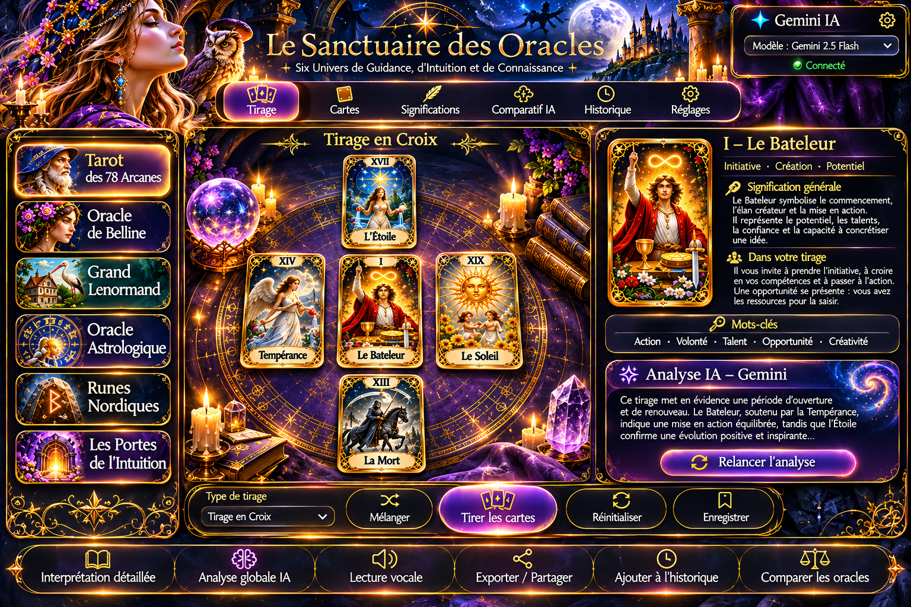

Le Sanctuaire des Oracles — Direction artistique V2
Maquette visuelle de référence. Les liens ci-dessous ouvrent les six modules existants de cette archive ; l'image est une proposition d'interface, pas une capture de fonctions déjà implémentées.
